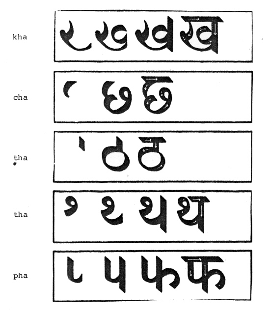

mailto:payer@payer.de
Zitierweise | cite as:
Payer, Alois <1944 - >: Sanskritkurs. -- Devanāgarī = देवनागरी. -- 5. Schriftübung 5. -- Fassung vom 2008-11-21. -- URL: http://www.payer.de/sanskritkurs/schrift05.htm
Erstmals hier publiziert: 2008-11-21
Überarbeitungen:
Anlass: Lehrveranstaltungen 1980 - 1984
©opyright: Dieser Text steht der Allgemeinheit zur Verfügung. Eine Verwertung in Publikationen, die über übliche Zitate hinausgeht, bedarf der ausdrücklichen Genehmigung des Verfassers
Dieser Text ist Teil der Abteilung Sanskrit von Tüpfli's Global Village Library
Falls Sie die diakritischen Zeichen nicht dargestellt bekommen, installieren Sie eine Schrift mit Diakritika wie z.B. Tahoma.
Die Devanāgarī-Zeichen sind in Unicode kodiert. Sie benötigen also eine Unicode-Devanāgarī-Schrift.

A) Schreiben Sie in Devanāgarī:
chāyā paṭhati chidā phaṭā yathā khanati phalaṃ chādayate khādanīyaṃ tathā pāṭhana chāgalaḥ ṭhaṃsarī phalarāśi mithunā phenaḥ khidira kathaṃ ratho likhati
B) Lesen und transliterieren Sie:
फूत् विठोबा वितथ पाययति छलकं खेदो पाठीनं छिदुरा खेडकं खटू मुखं मुथहा नाथो
Zu Lektion 6